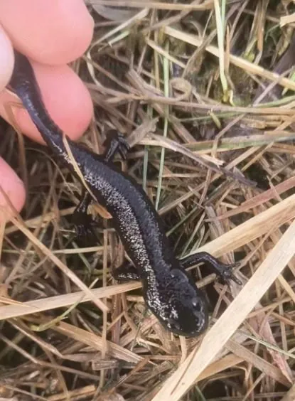

两栖动物 · 动物界
东方蝾螈 Cynops orientalis

中国东部常见的小型蝾螈，背部黑褐、腹部朱红并缀有黑斑，遇险时会翻露腹部警告天敌，常被作为观赏动物饲养。
- 分类
- 门脊索动物门纲两栖纲目有尾目科蝾螈科属蝾螈属
- 栖息环境
- 池塘、水田、山溪、水沟等静水或缓流水体
- 地理分布
- 中国江苏、浙江、安徽、江西、湖北、湖南、福建等地
- 保护级别
- IUCN 无危（LC）；中国国家二级保护动物
物种志
东方蝾螈体长 8–11 厘米，头部扁平，吻端钝圆，皮肤光滑，背面黑褐色，腹面朱红色并散布黑色斑点，尾部侧扁，适于在水中游动。它的皮肤腺体能分泌刺激性黏液，受到威胁时会翻过身来展示鲜红的腹部，警告捕食者“我有毒”。
它分布于中国长江中下游及东南部的池塘、水田、溪流和山间水沟，成体以水中生活为主，夜间捕食水生昆虫、螺类、小虾和蠕虫。每年 3–6 月繁殖，雌螈把卵逐粒粘在水草叶片上，每次产卵数十粒，卵约 2–3 周孵化，幼体有外鳃，变态完成后上陆活动。它是中国最常见的宠物蝾螈之一，野外捕捉与贸易量较大，现被列为国家二级保护动物，饲养与买卖需遵守相关规定。
形态与习性
- 食性水生昆虫、螺类、小虾和蠕虫
- 体长8–11 cm
- 寿命约 10 年，人工饲养可更久
- 繁殖卵生，卵逐粒粘于水草，约 2–3 周孵化
- 活动节律夜行性，白天藏在水草或石缝中
- 防御皮肤分泌刺激性毒素，翻腹展示红腹警告
- 毒性皮肤毒素可刺激眼睛和伤口，接触后需洗手
趣味知识
- 东方蝾螈翻过身露出鲜红腹部，是向天敌发出有毒警告。
- 它又名“中国火龙”，因腹部朱红如火焰而得名。
- 东方蝾螈的皮肤毒素虽不致命，但接触后揉眼会引起明显刺痛。